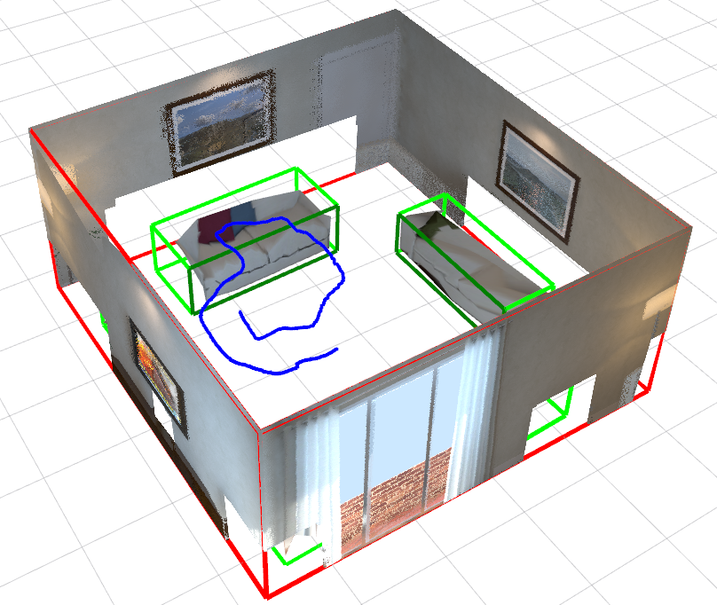
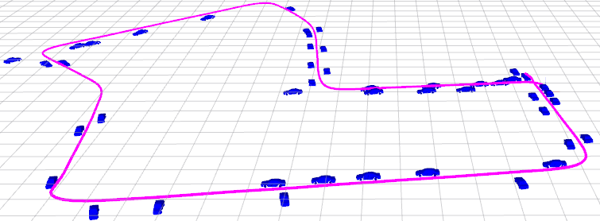
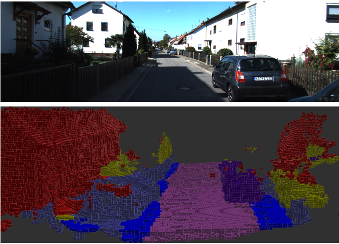
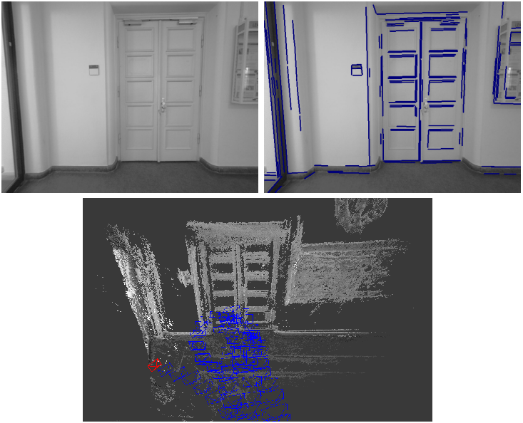
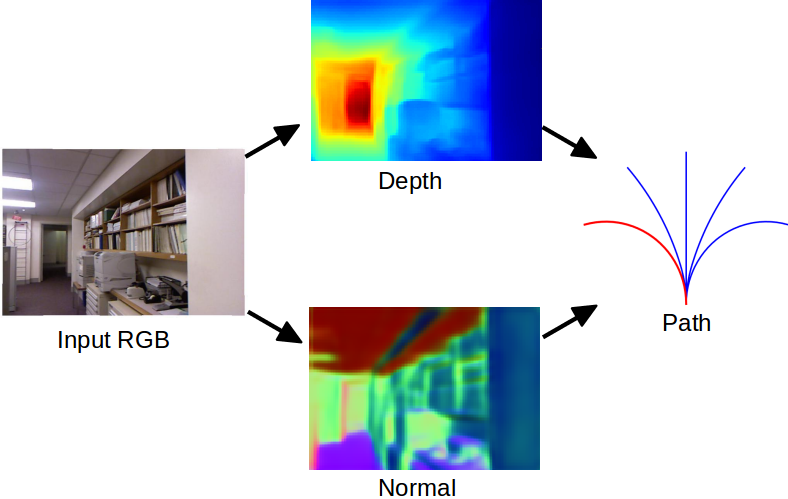
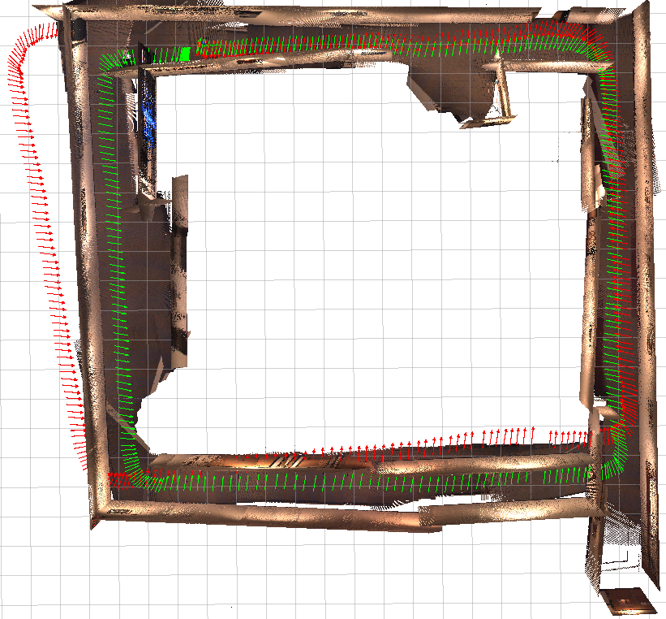
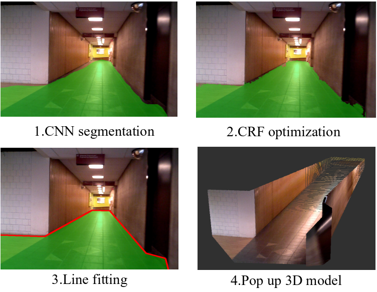
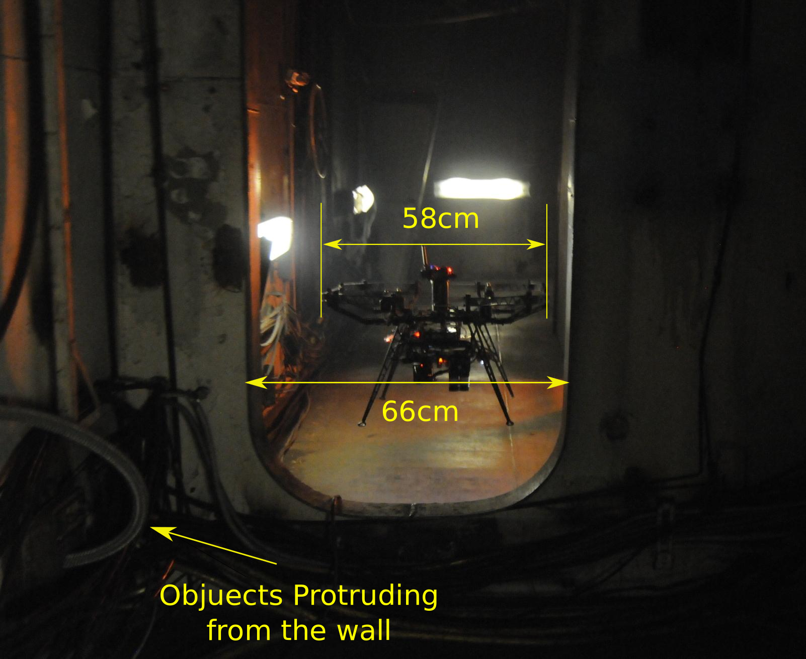

Shichao Yang
PhD StudentField Robotics Center (FRC)
Robotics Institute (RI)
Carnegie Mellon University (CMU)
Email: shichaoy@andrew.cmu.edu; 2013ysc@gmail.com
Research topics: SLAM, Computer Vision, Deep learning, Autonomous Vehicles, AR/VR.
About
I obtained my PhD degree (thesis) from Carnegie Mellon University in December 2018, advised by Sebastian Scherer in the Robotics Institute. I also collaborate with Michael Kaess. I am focusing on the visual simultaneous localization and mapping (SLAM) combined with object and layout understanding. I am also interested in related topcis including multi-sensor fusion, visual inertial etc.
Since then, I join Facebook Reality Lab (Oculus Research) as a Research Scientist, focusing on SLAM problem.
Current Research
 |
Shichao Yang, Sebastian Scherer IEEE Robotics and Automation Letters, 2019 |
 |
IEEE Transaction on Robotics, 2019 |
 |
Shichao Yang, Yulan Huang, Sebastian Scherer IEEE/Intl. Conf. on Intelligent Robots and Systems, IROS, 2017, Oral |
 |
Shichao Yang, Sebastian Scherer IEEE/Intl. Conf. on Robotics and Automation, ICRA, 2017, Oral |
 |
Shichao Yang, Sandeep Konam, et al., Sebastian Scherer Arxiv, 2017 |
 |
Shichao Yang, Yu Song, Michael Kaess, Sebastian Scherer IEEE/Intl. Conf. on Intelligent Robots and Systems, IROS, 2016, Oral |
 |
Shichao Yang, Daniel Maturana, Sebastian Scherer IEEE/Intl. Conf. on Robotics and Automation, ICRA, 2016, Oral |
 |
Zheng Fang, Shichao Yang, et al. Sebastian Scherer Journal of Field Robotics, JFR, 2017 |